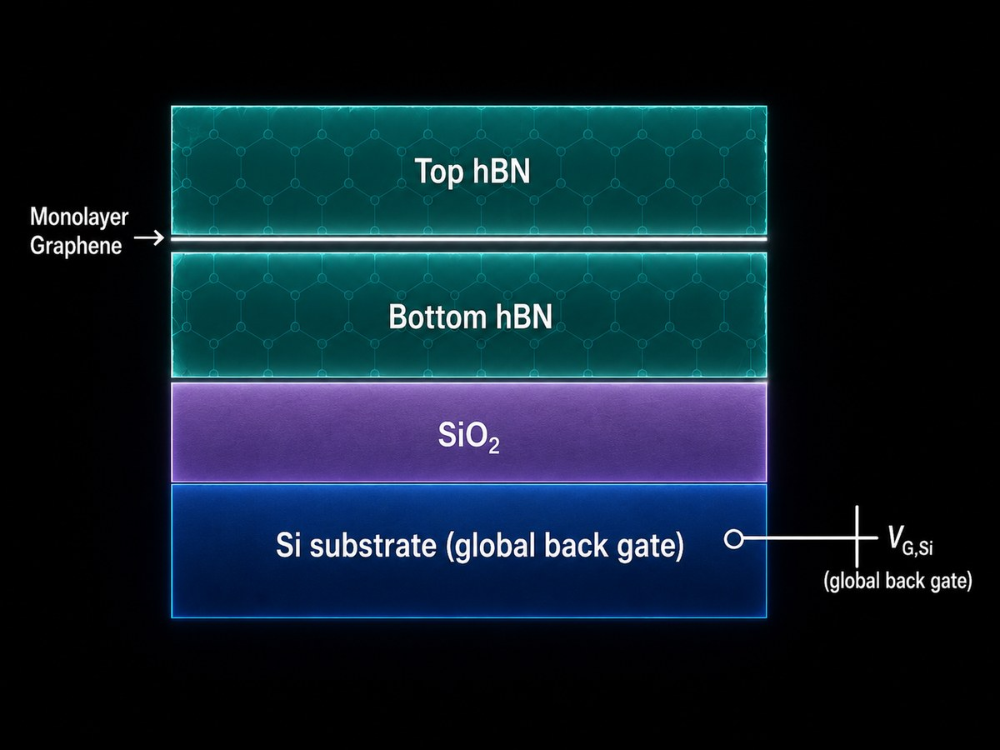
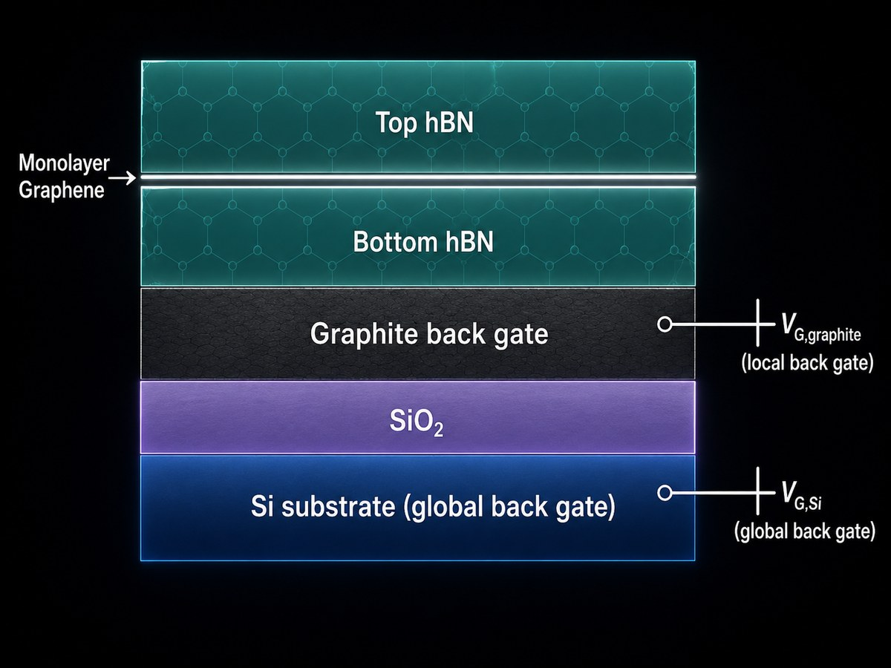
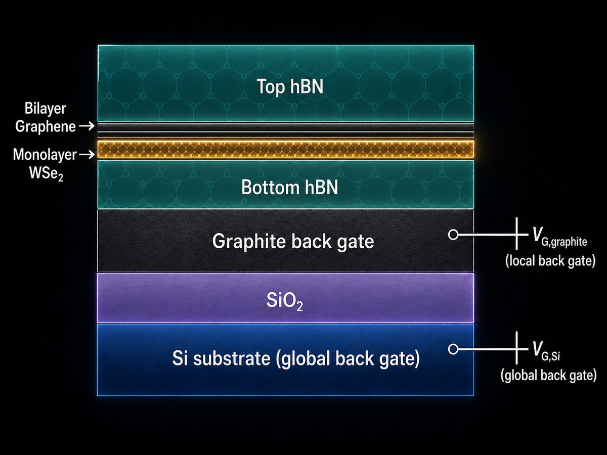
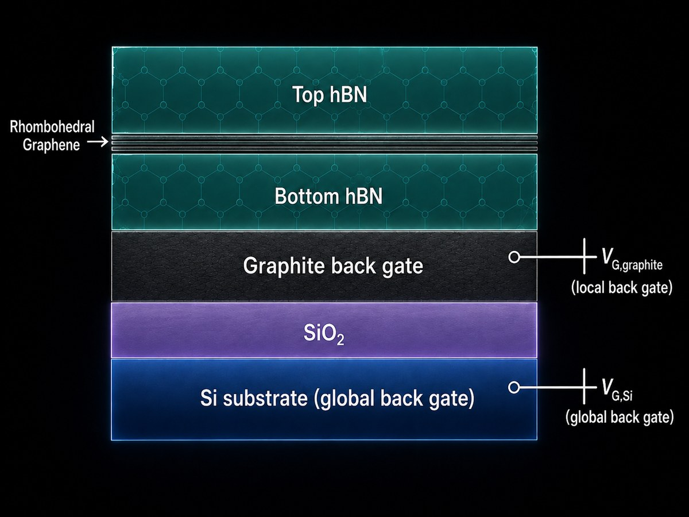

Research / Nano-fabrication
Van der Waals heterostructures
I fabricate van der Waals heterostructures: devices built by stacking individual atomically thin crystals into a designed sequence. Because each layer is held to the next only by van der Waals forces, materials that cannot be grown together can be assembled by hand, which makes these stacks a flexible platform for engineering electronic structure and testing the physics of two-dimensional systems.
Devices I have built
The stacks I have fabricated are hBN-encapsulated graphene heterostructures. Hexagonal boron nitride above and below the graphene provides an atomically flat, electrically clean environment that preserves the intrinsic behavior of the material inside. My first device uses the silicon substrate as a global back gate; the second adds a local graphite back gate, which together with a top gate allows the carrier density and the perpendicular displacement field to be tuned independently. This encapsulated, gated architecture is the standard high-quality platform for probing correlated and topological states in graphene-based systems.


Process
Assembly begins with mechanical exfoliation, thinning bulk crystals to monolayers and few-layer flakes that I identify and sort by optical contrast. I then build the stack by dry transfer, using a PC/PDMS stamp to pick up and release each flake in sequence with deterministic alignment, controlling layer order and orientation. I characterize the stacks with atomic force microscopy and Raman spectroscopy to confirm layer number, map topography, and check interfaces for the bubbles, wrinkles, and residues that degrade device quality. Much of the practical work is in improving the process itself, from exfoliation and stamp preparation to polymer release, annealing, and bubble management, to raise yield and interface quality and make results reproducible. Raman is also central to identifying stacking order: our group uses it to distinguish rhombohedral (ABC) from Bernal (ABA) stacking in multilayer graphene, which is otherwise difficult to determine.
Future directions
The natural extensions of this work add functionality to the same encapsulated, gated platform. One direction incorporates a WSe₂ layer against graphene to induce spin–orbit coupling by proximity; another targets rhombohedral multilayer graphene, whose flat bands host the correlated and Chern-insulating states described in the theory section. My current WSe₂ work is at the material-qualification stage — exfoliating and characterizing WSe₂ flakes by Raman and AFM — the step that precedes building these heterostructures.

